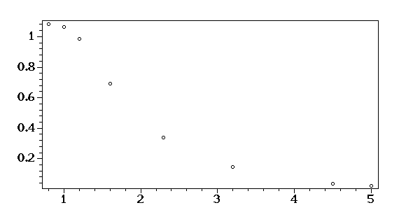
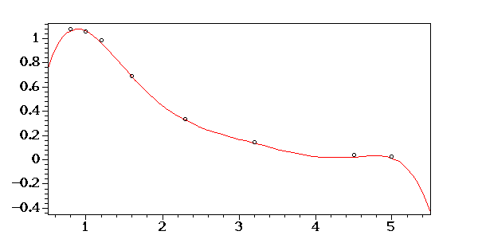
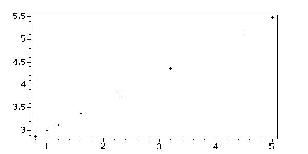
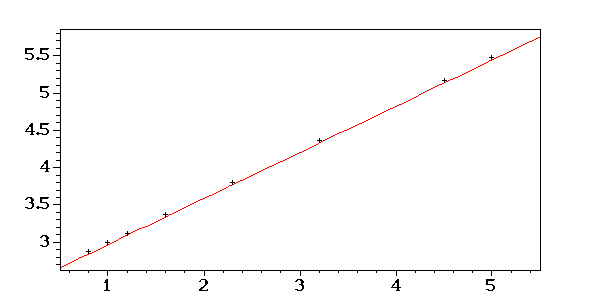
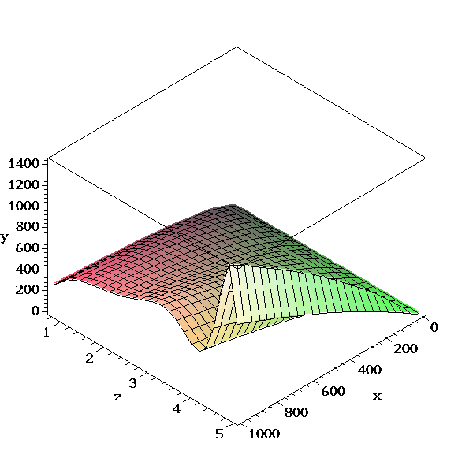
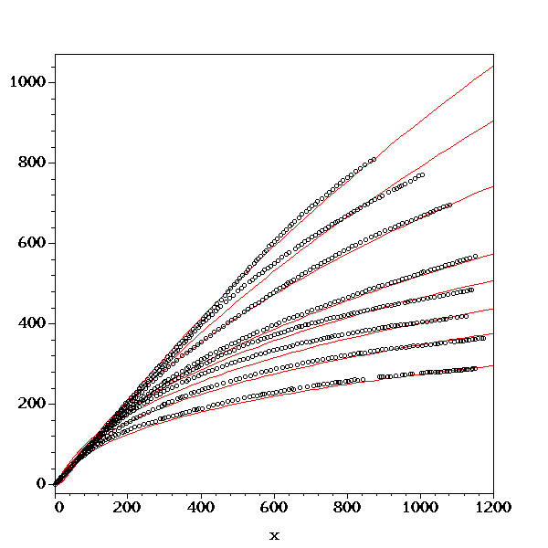

| surf-fit4 - Surface Fitting |
surf-fit4 - Surface Fitting (volume 4)
Agent Zhang (章亦春) <agent2002@126.com>
Create: 2005-01-08
Last Update: 2005-01-08
本文将接着 surf-fit 一文继续求解三维曲面的经验公式。
surf-fit 一文已经求出了 x-y 平面上 8 条曲线的经验公式，为了 参照的方便，我把它们列在下面：
Perl
use YAML qw(LoadFile Dump DumpFile);
@eqns = @{ LoadFile 'data/tmp.yml' };
Dump(\@eqns);
Output:
---
-
- 0.8
- 1.081229152*ln(x+1.)^2.876393202
-
- 1.0
- 1.061924903*ln(x+1.)^3.000000000
-
- 1.2
- .9847457878*ln(x+1.)^3.123606798
-
- 1.6
- .6924739503*ln(x+1.)^3.370820393
-
- 2.3
- .3380097044*ln(x+1.)^3.803444184
-
- 3.2
- .1461270560*ln(x+1.)^4.359674774
-
- 4.5
- .369842477e-1*ln(x+1.)^5.163118958
-
- 5.0
- .231793513e-1*ln(x+1.)^5.472135952
下面我们利用 Maple 的 match 函数来从 x-y 经验公式中提取 a 和 b. 我 习惯于用 Perl 函数进行封装：
Maple
1:
No Output
Perl
sub get_ab {
my $eqn = shift;
$maple->match("$eqn = a*ln(x+1.)^b", 'x', "'s'");
$maple->ReturnAST(1);
my $s = $maple->eval_cmd('s;');
die if not $s->type('set');
my @elems = $s->ops;
my ($a, $b);
map { ($_->lhs eq 'a') ? ($a = $_->rhs) : ($b = $_->rhs) } @elems;
$maple->ReturnAST(0);
return ("$a", "$b");
}
No Output
我们先来简单地测试一下 get_ab 函数：
Perl
get_ab('1.285763168*ln(x+1.)^2.784');
Output:
1.285763168,2.784000000
我们看到，结果完全正确。下面我们就可以很轻松地得到 a-z 平面上的“采样点”和 b-z 平面上的“采样点”了：
Perl
@az = ();
@bz = ();
for my $item (@eqns) {
my ($z, $eqn) = @$item;
my ($a, $b) = get_ab($eqn);
push @az, [$z, $a];
push @bz, [$z, $b];
}
Dump(\@az, \@bz);
Output:
---
-
- 0.8
- 1.081229152
-
- 1.0
- 1.061924903
-
- 1.2
- .9847457878
-
- 1.6
- .6924739503
-
- 2.3
- .3380097044
-
- 3.2
- .1461270560
-
- 4.5
- .3698424770e-1
-
- 5.0
- .2317935130e-1
---
-
- 0.8
- 2.876393202
-
- 1.0
- 3.
-
- 1.2
- 3.123606798
-
- 1.6
- 3.370820393
-
- 2.3
- 3.803444184
-
- 3.2
- 4.359674774
-
- 4.5
- 5.163118958
-
- 5.0
- 5.472135952
现在我们可以作出 a-z 平面上的采样点了：
Perl
my @s = map { '['.join(',',@$_).']' } @az;
my $list = '['.join(',', @s).']';
$maple->eval_cmd(<<".");
az_points := $list:
with(plots):
plotsetup(gif, plotoutput="image/diag1c.gif", plotoptions="height=300, width=600"):
az_pplot := pointplot(az_points, symbol=CIRCLE, color=black):
display([az_pplot], axes=BOXED);
.
No Output

接下来就得为 a-z 曲线选择经验函数了。从图上看，很像是双曲函数，因此我们 不妨将经验公式设为 a = c1/z+c2 形式。这里 c1 和 c2 是待定常数。很高兴 的是我们可以直接用最小二乘法解出 c1 和 c2：
Maple
with(CurveFitting):
LeastSquares(az_points, z, curve=c6*z^6+c5*z^5+c4*z^4+c3*z^3+c2*z^2+c1*z^1+c0):
az := evalf(%);
Output:
az := -1.648978152+8.523454667*z-.9460805903e-2*z^6+.1757179840*z^5-1.303382194*z^4+4.890285695*z^3-9.556421898*z^2
作出 a-z 经验曲线的图象：
Maple
with(plots):
plotsetup(gif, plotoutput="image/diag2c.gif", plotoptions="height=300, width=600"):
az_plot := plot(az, z=0.5..5.5, color=red):
display([az_plot, az_pplot], axes=BOXED);
No Output

显然，这个经验函数已经足够好了，因此完全没有必要再去调整它了。
我们再画出 b-z 平面上的采样点：
Perl
my @s = map { '['.join(',',@$_).']' } @bz;
my $list = '['.join(',', @s).']';
$maple->eval_cmd(<<".");
bz_points := $list:
with(plots):
plotsetup(gif, plotoutput="image/diag4c.gif", plotoptions="height=300, width=600"):
bz_pplot := pointplot(bz_points, symbol=CROSS, color=black):
display([bz_pplot], axes=BOXED);
.
No Output

接下来就得为 b-z 曲线选择经验函数了。从图上看，很像是双曲函数，因此我们 不妨将经验公式设为 b = c1*z^2+c2*z+c3 的形式。这里 c1 和 c2 是待定常数。很高兴 的是我们可以直接用最小二乘法解出 c1 和 c2：
Maple
with(CurveFitting):
LeastSquares(bz_points, z, curve=c1*z+c2):
bz := evalf(%);
bz := 2.381966012+.618033988*z;
Output:
bz := 2.381966012+.618033988*z
作出 b-z 经验曲线的图象：
Maple
with(plots):
plotsetup(gif, plotoutput="image/diag5c.gif", plotoptions="height=300, width=600"):
bz_plot := plot(bz, z=0.5..5.5, color=red):
display([bz_plot, bz_pplot], axes=BOXED);
No Output

显然，这个经验函数已经足够好了，因此完全没有必要再去调整它了。
Maple
surf := evalf(az*ln(x+1.)^bz);
Output:
surf := (-1.648978152+8.523454667*z-.9460805903e-2*z^6+.1757179840*z^5-1.303382194*z^4+4.890285695*z^3-9.556421898*z^2)*ln(x+1.)^(2.381966012+.618033988*z)
Maple
plotsetup(gif, plotoutput="image/diag6c.gif", plotoptions="height=600, width=600"):
plot3d(surf, x=0..1000, z=0.8..5.0, axes=boxed, labels=[x,z,y]);
No Output

Perl
use Scalar::Util qw(looks_like_number);
my %curves = %{ LoadFile('data/2d-points.yml') };
$i = 1;
for my $key (keys %curves) {
my $z = $key;
$z =~ s/\s+|mm$//g;
die if not looks_like_number($z);
my @points = @{ $curves{$key} };
plot_curve($i, $z, @points);
$i++;
}
sub plot_curve {
my $i = shift;
my $z = shift;
my @points = @_;
my @s = map { '['.join(',',@$_).']' } @points;
my $list = '['.join(',', @s).']';
$maple->eval_cmd(<<".");
points := $list:
curve := evalf(eval(surf, z=$z));
pplot_$i := pointplot(points, symbol=CIRCLE, color=black):
cplot_$i := plot(curve, x=0..1200, color=red):
.
}
No Output
下面我们将所有的点和曲线都一齐画在 x-y 平面上：
Perl
my @list;
foreach (1..$i-1) {
push @list, "pplot_$_,cplot_$_";
}
my $list = '['.join(',', @list).']';
$maple->eval_cmd(<<".");
plotsetup(gif, plotoutput="image/diag7c.gif", plotoptions="height=600, width=600"):
display($list, axes=BOXED);
.
No Output

| surf-fit4 - Surface Fitting |